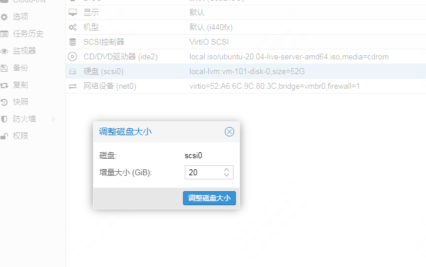
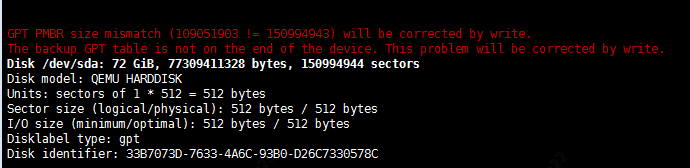

Proxmox VE 在线扩容磁盘分区
Proxmox VE 在线扩容磁盘分区
添加磁盘大小

在 VM 上做扩容操作
- 安装 growpart
yum install -y epel-release
yum install -y cloud-utils
- 查看系统盘 路径
fdisk -l
df -h

- 扩容设备并重启
growpart /dev/sda 2 #2代表是第二块系统分区，不是sda2,中间有空格
reboot
- 重启执行命令
xfs_growfs /dev/sda2 #(xfs 文件系统)
resize2fs /dev/sda2 #(ext4 文件系统)
- 更新完成
df -h